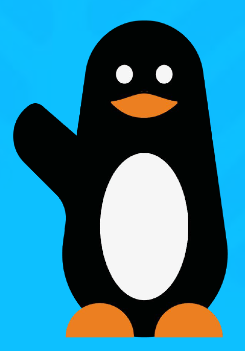

wave
LE COFFRE MYSTÈRE
SALON DE L’ÉPARGNE
SALON DE L’ÉPARGNE
Défi basket
5 paniers. 1 minute.
Marque pour révéler ton indice.
PANIERS0 / 5
TEMPS01:00
À toi de jouer !
Appuie sur « Tirer ! » quand le curseur passe dans la zone bleue.
Marque 5 paniers avant la fin des 60 secondes.
VISE LA ZONE BLEUE
Appuie au bon moment pour marquer.
Sur ordinateur : barre d’espace.
Félicitations !
Ton indice est :
Garde cet écran et poursuis la chasse !
